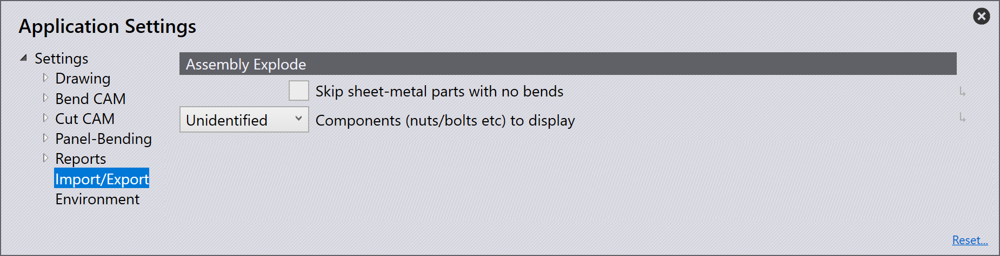

Import/Export
Import settings

Units for DXF files - Zde nastavte milimetry nebo palce.
Stitch together lines/arcs closer than this - Nastavte tuto hodnotu (0>1 mm). Při importu dílu, který obsahuje čáry/oblouky blíže než nastavená hodnota, software je při importu automaticky spojí.
Maximum thickness for sheet-metal part - Aby bylo možné rozpoznat velký plechový díl, bylo by nutné zvýšit prahovou hodnotu pro rozpoznání plechu. (10>40mm) Toto je automaticky nastaveno na 25 mm nebo palec, v závislosti na použité jednotce.
Point entities - V závislosti na zvolené možnosti se určí, jakým způsobem budou body importovány.
Import all - Všechny body budou importovány a zobrazeny.
Skip points on polylines - Tím se přeskočí všechny body, které jsou detekovány na polyčárách.
Skip all - Tím se při importu přeskočí všechny body a žádný se nezobrazí.
Ignore layers in DXF/DWG files - Výkresy DXF a DWG jsou obvykle vytvářeny na různých vrstvách. S tímto nastavením software ignoruje tyto vrstvy a přesune všechny objekty na výchozí vrstvu.
Explode blocks in 2D drawing - Rozdělí seskupení během importu
Convert white entities to black - Zapněte toto nastavení, aby se během importu bílé objekty převedly na černé.
Darken colors during DXF import- Zapněte toto nastavení, aby se barevné objekty během importu ztmavily.
Remove duplicate segments - Zapněte toto nastavení, aby se při importu odstranily všechny duplicitní geometrie nalezené v dílu.
DXF settings
V této části se budeme zabývat konfigurací DXF settings. Klikněte na ikonu Settings. Klikněte na Import/Export a přejděte na DXF settings.

Angles in DXF are interior angles - Aktivujte toto nastavení, aby úhly v DXF byly zpracovány jako úhly otevření.
Export settings
V této části se budeme zabývat konfigurací Export settings. Klikněte na ikonu Settings. Klikněte na Import/Export a přejděte na Export settings.

No POLYLINE objects in DXF output - Při exportu DXF souborů se uzavřené obrysy obvykle exportují jako polyčáry. Některé CAD systémy nemohou tento výstup zpracovat. S tímto nastavením software generuje DXF s čarami a oblouky. Tyto soubory jsou čitelné kdekoli, ale vytvořené soubory jsou větší a spojení mezi čarami a oblouky se ztratí
Output bend-info when saving DXF files - Zapněte toto nastavení, aby byl exportovaný soubor DXF vygenerován s parametry ohýbání.
Bend-info in Starmatik format - Zapněte tento spínač pro výstup parametrů ohýbání ve formátu Starmatik. Zde je textová entita umístěna přesně uprostřed každého řádku, který má být linií ohybu.
Convert black to gray on output - Při exportu 2D dat jsou objekty v souboru DXF ve výchozím nastavení vypsány černě. Aby bylo možné lépe rozpoznat objekty v CAD programech, jsou objekty s tímto nastavením zobrazeny šedě.
Start MetaCAM when PDG files are exported - Zapněte toto nastavení, aby se soubor PDG automaticky nakonfiguroval pro otevření v MetaCAM
Format for flat pattern - Při exportu plochého vzoru lze nastavit formát souboru GEO, DXF nebo PDG.
Spline conversion
V této části se budeme zabývat konfigurací nastavení ui:3594[Spline conversion]. Klikněte na ikonu Settings. Klikněte na Import/Export a přejděte na nastavení Spline conversion.

Convert splines on import - Zde nastavte, zda je převod spline křivky vypnutý, nebo nastavený tak, aby převáděl spline křivky na čáry nebo oblouky. V obou případech bude každá spline křivka převedena na jeden objekt polyčáry, který obsahuje úsečky nebo oblouky.
Node-count computation - Počet generovaných čar nebo oblouků se počítá pomocí jednoho ze dvou mechanismů: rozteč nebo odchylka.
Length of each line or arc segment - Pokud je v výpočtu počtu uzlů vybrána možnost Rozteč, nastavte zde délku každého oblouku nebo úsečky, aby se spline křivka rozdělila pomocí této délky kroku.
Maximum deviation during approximation - Pokud je v výpočtu počtu uzlů zvolena Odchylka, nastavte zde maximální povolenou odchylku mezi původní hladkou spline křivkou a aproximací přímkou nebo obloukem. Polyčára je konstruována z co nejmenšího počtu segmentů, přičemž maximální chyba je udržována v rámci tohoto limitu.
Assembly Explode
V této části se budeme zabývat konfigurací nastavení Assembly Explode. Klikněte na ikonu Settings. Klikněte na Import/Export a přejděte na nastavení Assembly Explode

Skip sheet-metal parts with no bends - Při rozložení konstrukční skupiny se po zapnutí tohoto spínače zobrazí pouze plechové díly s liniemi ohybu. Vypnutím se zobrazí všechny díly v konstrukční skupině.
Components (nuts/bolts etc) to display - Pomocí tohoto nastavení vyberete, které možnosti se mají zobrazit při rozložení konstrukční skupiny, která obsahuje jiné součásti.
None - Po rozložení se zobrazí pouze plechové díly, ostatní matice/šrouby se nezobrazí.
Unidentified - Zobrazují se pouze součásti, které ještě nebyly identifikovány v softwaru.
All - Zobrazují se všechny součásti.
Layer mapping

V této části se budeme zabývat konfigurací Layer mapping. Klikněte na ikonu Settings. Klikněte na Import/Export a přejděte na nastavení Layer mapping.
V této sekci lze vrstvy, které se používají na dílech importovaných do softwaru, automaticky přiřadit k jejich funkcím (použití).
Pokud má importovaný díl vrstvu ZNAČKA, lze ji nastavit tak, aby se automaticky použila vrstva Značka v softwaru.
Layer name - Toto je název vrstvy, která v případě importu dílu s touto vrstvou použije funkce nastavené v panelu „Použít“.
Use - Toto je funkce vrstvy. Různé dostupné možnosti jsou:
Standard - Toto je standardní vrstva, která se používá pro CAM.
Auxiliary - Pomocná vrstva, která se nepoužívá pro CAM.
Mark - Všechny entity v této vrstvě budou označeny, nikoli vyříznuty.
Approach marker - Bodové entity označující najížděcí pozici laseru.
Sequence marker - Textové značky označující pořadí kontur.
Forming center - Středová značka pro tváření (bod nebo malé L).
Forming foot print - Obrys (stopa) tváření.
Evaporate - Tato vrstva by sloužila k rozlišení vypalování filmu.
Dot marking - Tato vrstva by byla použita pro QR kódy.
Info - Toto je pouze informační vrstva.